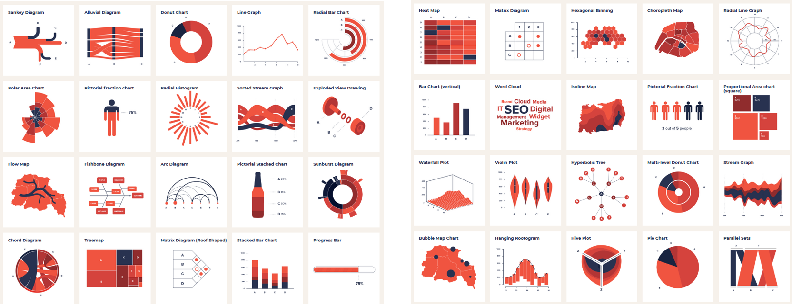
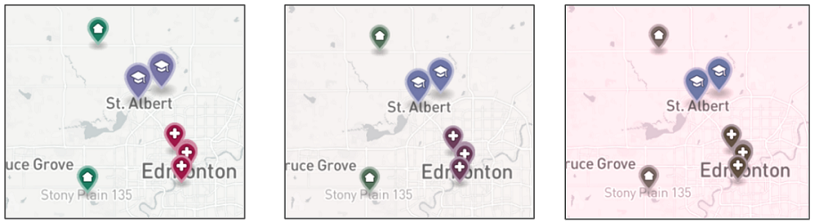
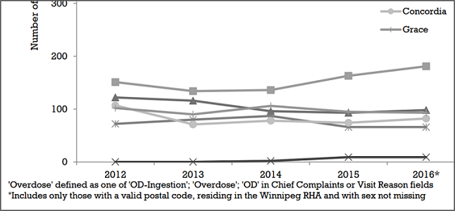
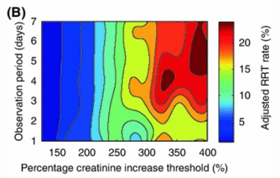
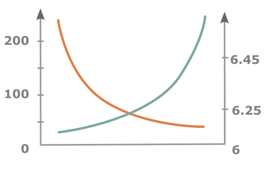
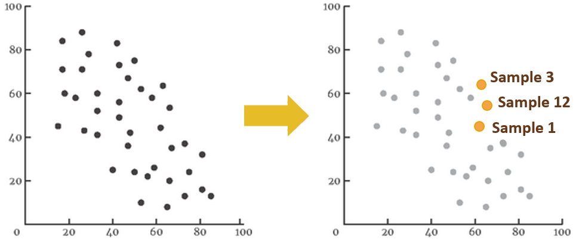
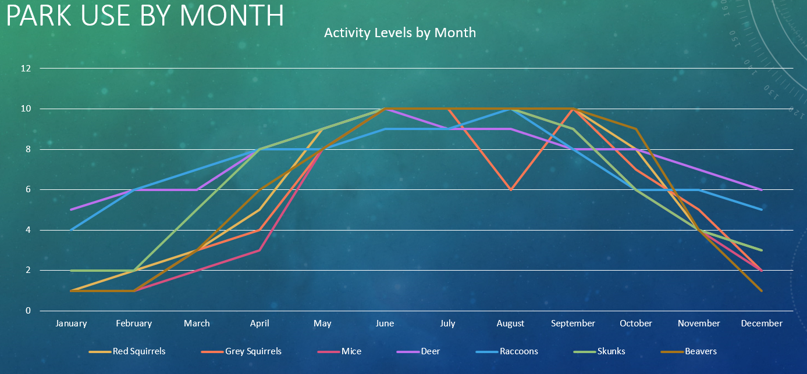
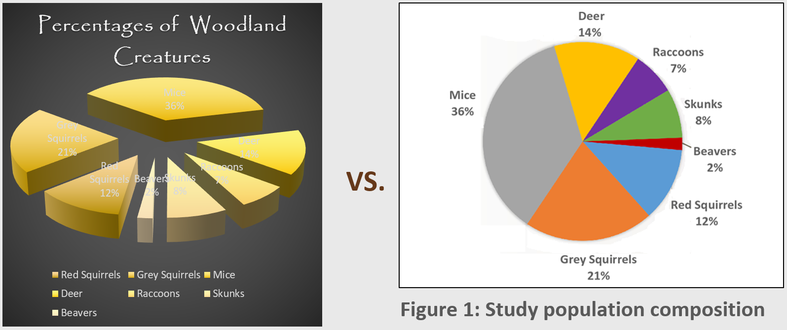
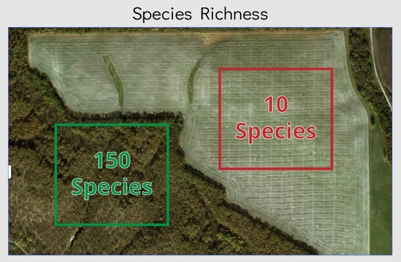

Data Visualization:
The Good, the Bad & the Ugly
Meg Miller - GIS & Data Visualization Librarian
slides: bit.ly/edub3528
Outline
- Define data visualization;
- Discuss visualization elements and their uses;
- Explore best practices in visualization creation;
- Explore usefulness of different display types and tools.
Hanging Rootograms?!

What are we focussing on?
- Information visualization.
- Display data in a way that makes it easier for your audience to explore or understand your project.
We don't want 'chart junk'.

1. Do you know your data
2. Who is your audience
Audience- Things to consider:
Audience- Purpose
Exploratory: Population Estimate Dashboard
Explanatory: Assisted Suicide Infographic
Font- What about ugly?
- Font has personality, select combinations appropriate for your audience.
- Keep things simple: one decorative, one for body text.
Use a tool like FontPair help with font selection.
3. What are best practices in colour selection for classification
Colour- Continuous vs discrete data
Select color schemes appropriate to your data type (shade vs. hue).

Colour- What about ugly?
- Keep things neutral with 2-3 accent colours maximum.
Use a tool like Color Picker help with colour selection.
4. What are some unconscious perceptions we have around colour
Colour- Unconscious perceptions
- Red is bad, green is good;
- Light blue shapes on maps are water;
- Light colours represent less, dark more.
5. How can we take accessibility into consideration when we are selecting colour palettes
Colour- Accessibility:
 
6. What is cognitive load, and why does it matter in visualization
Cognitive load- Special Effects & Stacking
- Humans are awful at interpreting 3D graphics and clutter.
- 3-5 classes are ideal, 5-7 at most.
7. How important is consistency
Cognitive load- Consistency
Keep consistency between legends and graphics.
Cognitive load- Consistency
Keep consistency between axes, don't force correlation.
8. What can I do to improve the clarity of my graphics
Cognitive load- Clarity
Use explanatory text and colour to create emphasis.
Cognitive load- Clarity
Use small multiples.
Cognitive load- Clarity
Keep it simple (and don't mislead the user).
9. What technology considerations should be taken into account
Technology- Reproducibility
Standard file formats and programs.
Human component
Technology- Considerations

10. How can I get started
Resources:
Data Visualization LibGuide
Don't forget about training resources!
Key points:
Message - be selective
Audience - you're creating this for them
Data - requirements and structure
Be kind to your future self.
It can be simple!

Questions
meg.miller@umanitoba.ca
slides: bit.ly/edub3528